数擎全量预置计算巢服务说明
概述
天域数擎是以友盟全域数据为基础，提供在线营销服务增强型产品，包括营销标签模型预测分、模型特征定制服务、实时营销增强API，助力企业业务增长。
全域标签增补：预置丰富的全域标签，覆盖基础属性、社会属性、地域分布、兴趣偏好等300+维度，在一方特征不足的情况下，友盟三方数据为企业存量用户补充全域特征，进行人群特征与偏好识别，助力企业用户画像洞察，精细化运营手段，充分满足业务需要。
本文介绍基于计算巢，部署阿里云私域的数擎全量预置数据服务，该服务将提供全域设备（idfa、oaid、手机号）的特征矩阵或兴趣分标签数据的查询功能。
使用计算巢服务部署简介： 传统软件部署方式，需要服务商/软件供应商提供资源配置单，交由用户（或交付伙伴）手动创建资源、部署服务、配置服务，过程大量人工介入，依赖经验，比如涉及docker、postgres数据库等资源的创建和配置，应用软件的安装配置调试等。 计算巢支持标准化的应用交付方式，服务商将应用发布为标准服务，在用户订阅服务后计算巢自动触发部署流程，部署期间，无需人工参与，解决传统模式下的交付和部署难题，且除了ECS等资源费用外，无需额外付费。
实例规格
根据您购买的数据类型选择对应的 ECS 和数据盘配置，此外还需要您提供和 ECS 同 region 的 OSS bucket，用于中转传输数据到 ECS 本地服务数据库。
全量预置特征矩阵+ 兴趣分（数据压缩方案）
实例规格：ecs.r7.4xlarge（16 vCPU 128 GiB，内存型 r7 ） ¥2673.49/月
操作系统：Anolis OS 8.4 RHCK 64位
存储：
- 系统盘：ESSD云盘 100GB
- 数据盘：15T（1 个日期分区快照）¥1000/T/月
网络：>=100Mbps，建议 1000Mbps
数据同步时长：10-48h（视网络情况）
全量预置特征矩阵（数据压缩方案）
实例规格：ecs.r7.4xlarge（16 vCPU 128 GiB，内存型 r7 ）
操作系统：Anolis OS 8.4 RHCK 64位
存储：
- 系统盘：ESSD云盘 100GB
- 数据盘：10T（1 个日期分区快照）¥1000/T/月
网络：>=100Mbps
数据同步时长：10-36h（视网络情况）
全量预置兴趣分（数据压缩方案）
实例规格：ecs.r7.4xlarge（16 vCPU 128 GiB，内存型 r7 ）
操作系统：Anolis OS 8.4 RHCK 64位
存储：
- 系统盘：ESSD云盘 50GB ¥50/月
- 数据盘：5.5T（1 个日期分区快照）¥1000/T/月
网络：>=100Mbps
数据同步时长：10-24h（视网络情况）
部署流程
一、准备工作
您需要拥有一个阿里云账号，对 ECS、VPC 、VSWITCH、OSS 、RAM 等资源进行访问和操作。
若您使用主账号，可直接创建服务实例。若您使用RAM用户创建服务实例，且是第一次使用阿里云计算巢，需要在创建服务实例前，对使用的RAM用户的账号添加相应资源的权限。更多信息请参见 为RAM用户授权。
RAM 账号权限
| 权限策略名称 | 备注 |
|---|---|
| AliyunVPCFullAccess | 管理专有网络（VPC）的权限 |
| AliyunECSFullAccess | 管理云服务器服务（ECS）的权限 |
| AliyunROSFullAccess | 管理资源编排服务（ROS）的权限 |
| AliyunComputeNestUserFullAccess | 管理计算巢服务（ComputeNest）的用户侧权限 |
| AliyunComputeNestFullAccess | 管理计算巢服务（ComputeNest）的权限 |
| AliyunComputeNestSupplierFullAccess | 管理计算巢服务（ComputeNest）的权限 |
部署架构
部署环节涉及到的云资源： ECS、数据盘、OSS、VPC、交换机、安全组及相应规则
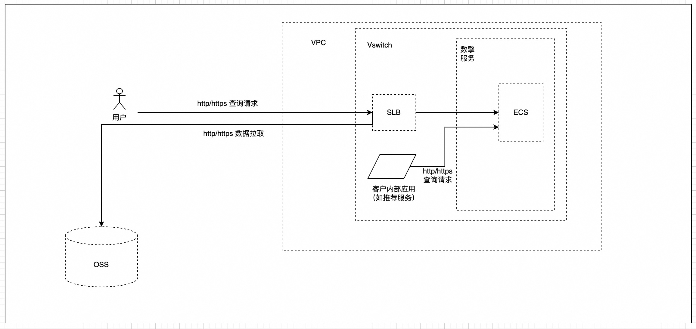
OSS资源：通过线下方式提供和 ECS 同 region 的 OSS bucket（bucket name、endpoint、ak、sk）给到数擎工程同学。
二、获取部署链接
方式一：
通过商务渠道获取：如下部署链接 部署链接 快速体验。
如果链接显示没有权限，点击诊断查看所需添加的权限策略。
方式二： 访问阿里云计算巢产品控制台，服务目录中通过"数擎全量预置"关键字进行搜索： 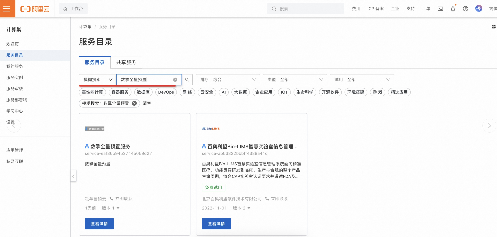
三、创建服务实例
进入部署链接后，开始您阿里云账号（UID）下的数擎计算巢服务所需资源配置：
服务实例命名、地域选择、付费类型（ECS的付费类型），可选按量付费或包年包月。
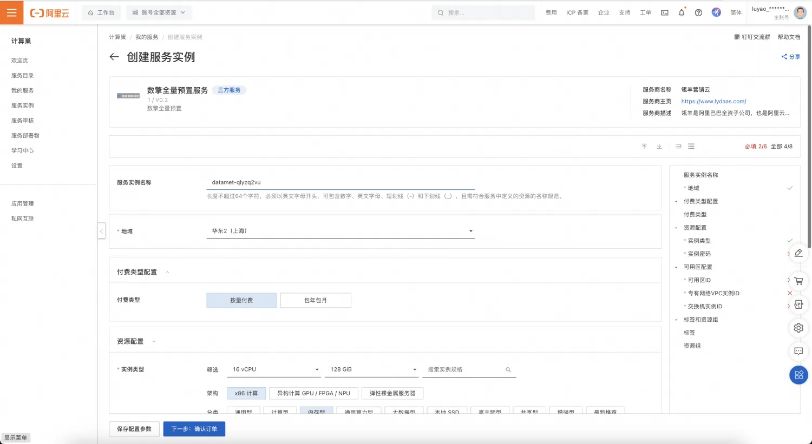
ECS 配置（CU、内存选型，建议ecs.r7.4xlarge 规格， 配置不低于该配置），实例密码为 ECS root 账号登录密码，密码勿丢失。可用区 、VPC、交换机等根据实际情况，选择您已存在的实例。
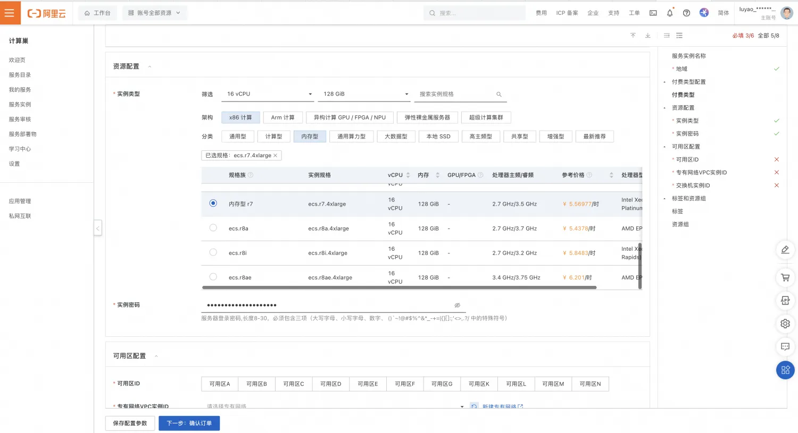
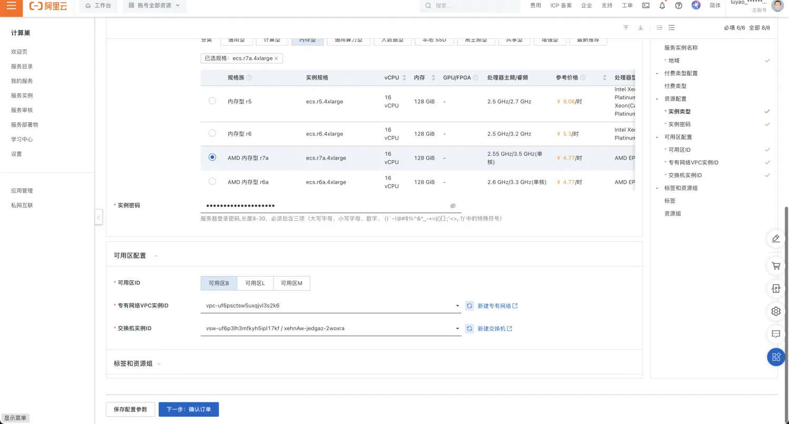
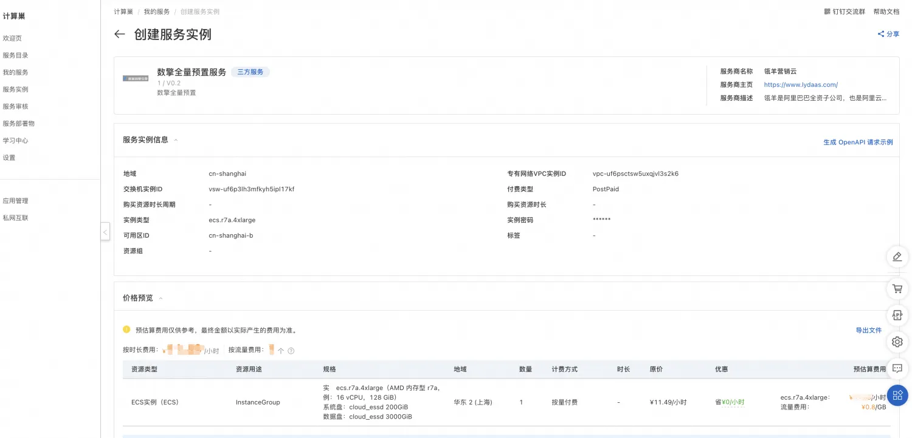
点击 立即创建 提交
四、查看部署状态
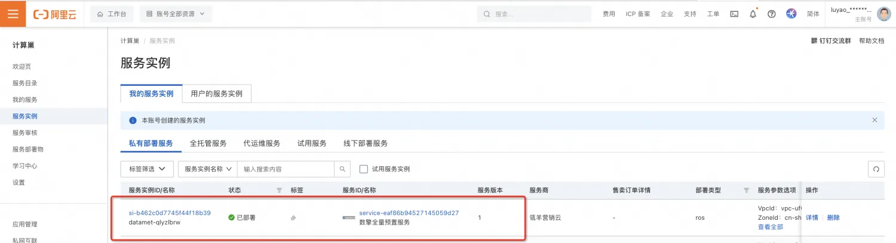
点击实例 id 查看
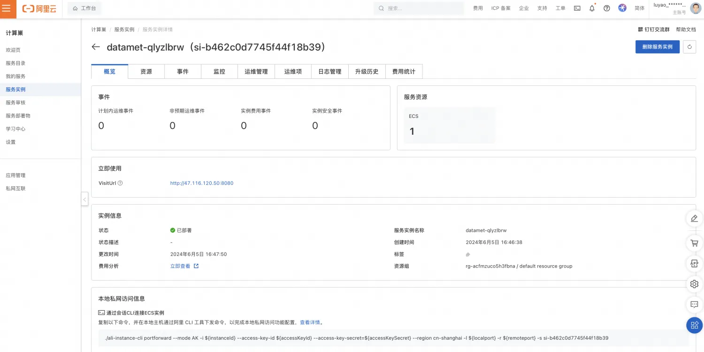
点击“资源” 查看，云资源中，资源类型为实例的即本次部署服务的 ECS 实例
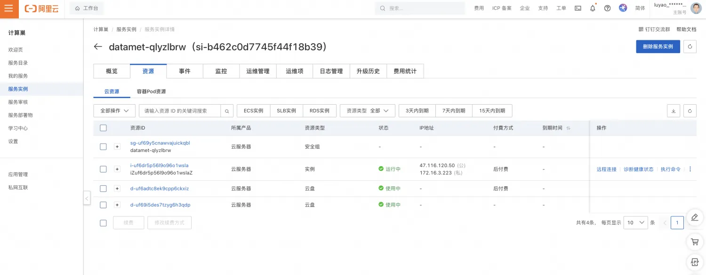
点击 ECS 实例 id 进入，修改安全组策略：入口方向支持 22 端口（ssh 登录）；公网带宽修改为 100Mbps，按量付费
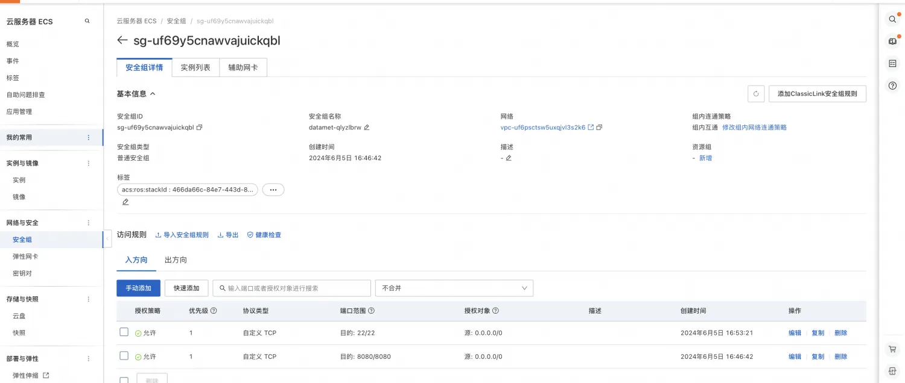
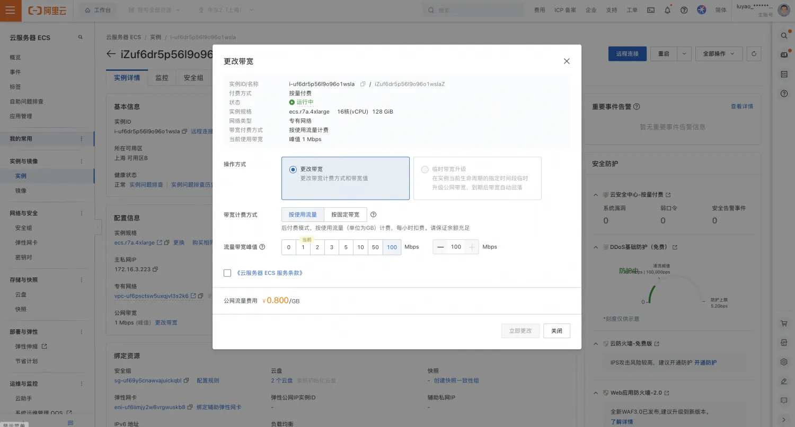
远程连接 ECS 实例
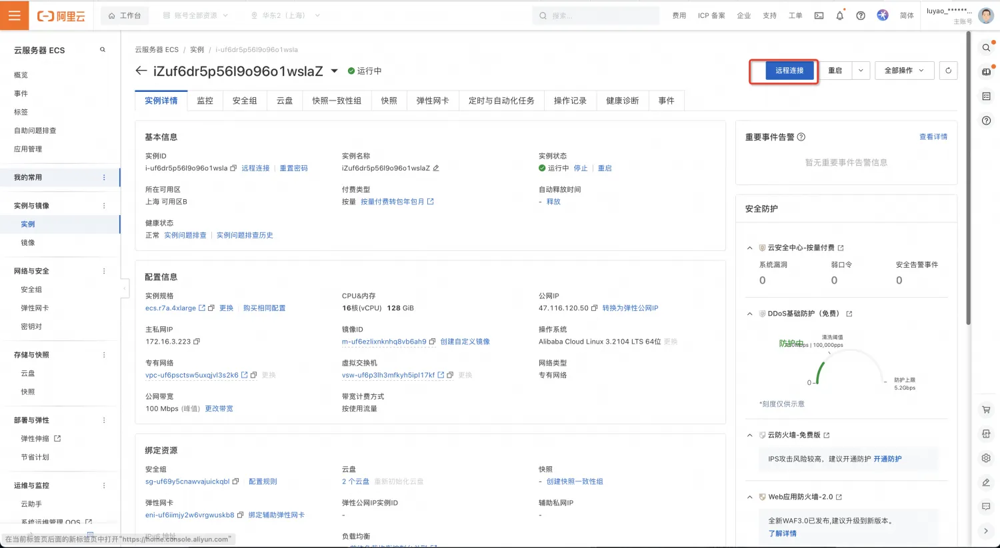
密码为创建服务实例时设置的。
进入服务器，查看配置，按接口说明文档，验证接口连通性和数据结果。
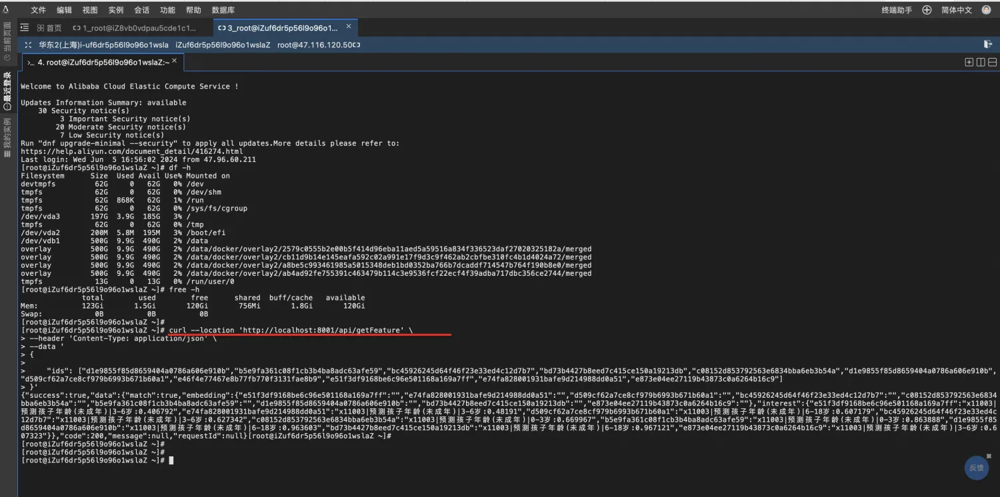
服务本地查询接口验证：
curl --location 'http://localhost:8001/api/getFeature' \
--header 'Content-Type: application/json' \
--data '
{
"ids": ["a5ba3655f82aea6de4b7673c80xxxxxx"]
}'
数据同步
此时，上一步查看的是预置的demo数据，后续您需要联系数擎的商务或技术同学，开始OSS到您服务本地的数据同步，并开通服务调用的quota。 步骤如下：
OSS数据复制开启
OSS数据复制介绍参考：OSS跨账号跨区域复制
这里，用户作为数据复制目标方，按如下步骤操作： 使用如下授权角色ARN:acs:ram::1444820317377909:role/admin-oss-temp 登录OSS控制台，选择具体bucket，权限控制->Bucket授权策略->接收复制对象，本步配置同意数擎OSS数据同步到您的OSS，本步骤双方无额外费用。 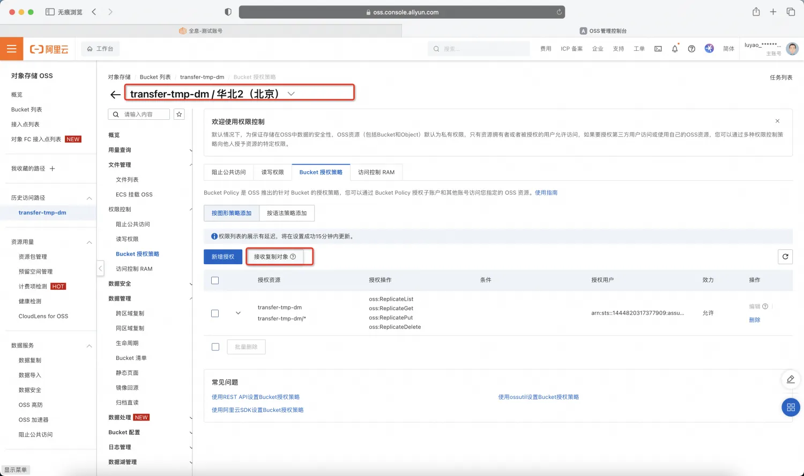 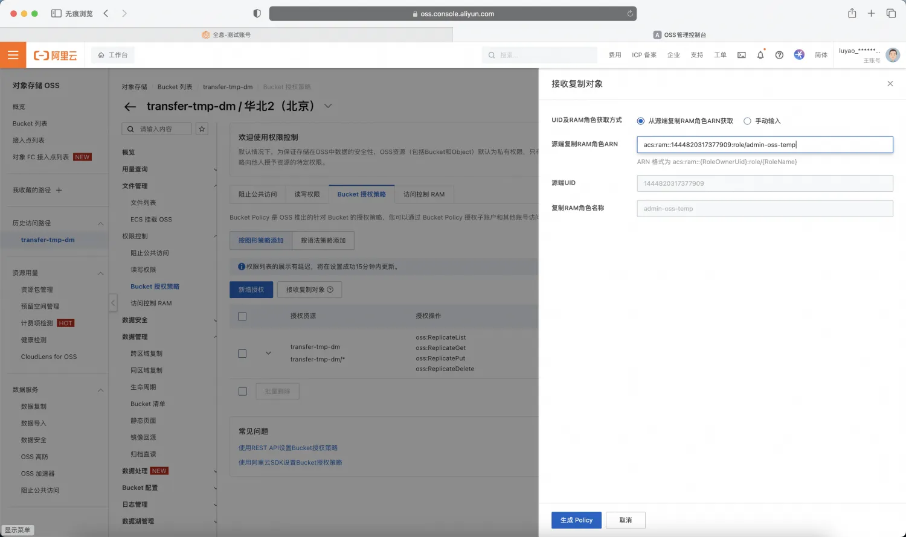 点击生成后如下： 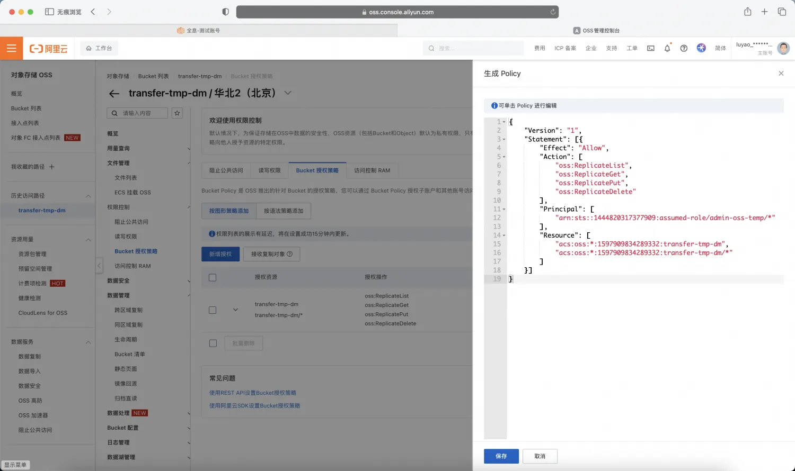
OSS到本地数据同步
使用服务内置脚本（依赖OSSUtil工具），脚本位于/data/datax路径下。
OSSUtil配置方式如下（软件安装位于/data路径下）：
执行 ./ossutil64 config
oss bucket及路径：oss://data-met/bucket_name/
endpoint：https://cn-region_name.oss.aliyuncs.com
ak：xxxxx
sk：xxxxx
(ak、sk需要在OSS控制台获取具备OSS读写权限的RAM账号的ak、sk)
脚本配置如下：
涉及文件：
umeng_feature.json
umeng_feature_job.sh
umeng_idmapping_temp.json
umeng_idmapping_job.sh
分别修改umeng_feature.json、umeng_idmapping_temp.json中的parameter->endpoint、accessId、accessKey、bucket、object参数。
endpoint：从您的OSS bucket控制台获取，注意是内网域名，配置错误会影响下载速度且产生额外费用：
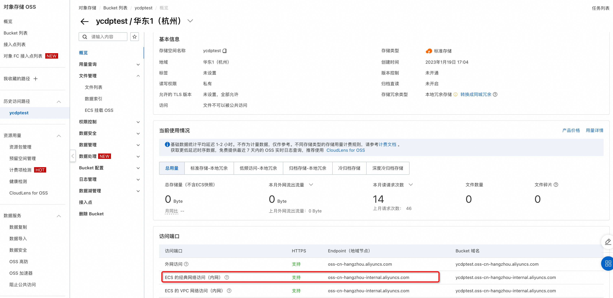
bucket：bucket name。
object：umeng_feature.json 对应 customer_name/youmeng/customer/2/user=customer_name/ ；
umeng_idmapping_temp.json 对应 customer_name/youmeng/customer/2/user=customer_name/ ；注意customer_name需要替换为约定好的客户名称简写。
此时，在cd /data/datax/路径下，执行如下脚本
sudo chmod 755 umeng_idmapping_job.sh
sudo chmod 755 umeng_feature_job.sh
sudo nohup ./umeng_idmapping_job.sh >log.txt 2>&1 &
sudo nohup ./umeng_feature_job.sh >log2.txt 2>&1 &
关注相关日志log.txt、log2.txt的执行情况。
计费说明
按查询 id 去重计费。以上步骤完成后，需人工开通调用quota量后使用服务，详询数擎商务及产品答疑。
可在服务本地查询开通quota量、已使用quota量查询：
curl --location --request POST 'http://localhost:8001/api/getQuotaInfo'
开通流程：
登录本地数据库进行quota更新
docker exec -it postgres-rbm bash
psql
\c umeng_turbox_bitmap
UPDATE um_purchase_package set amount='quota' where id = 1;
其中quota需要联系数擎商务后产品人员获取合同对应的quota值。
更新后，重启应用容器：
docker stop datamet-private-deployment
docker start datamet-private-deployment